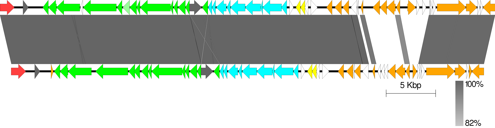
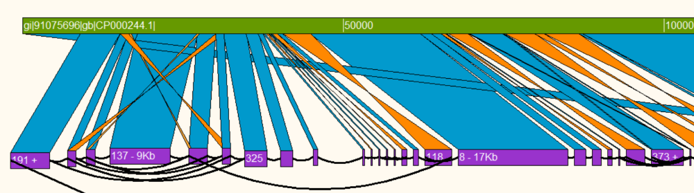
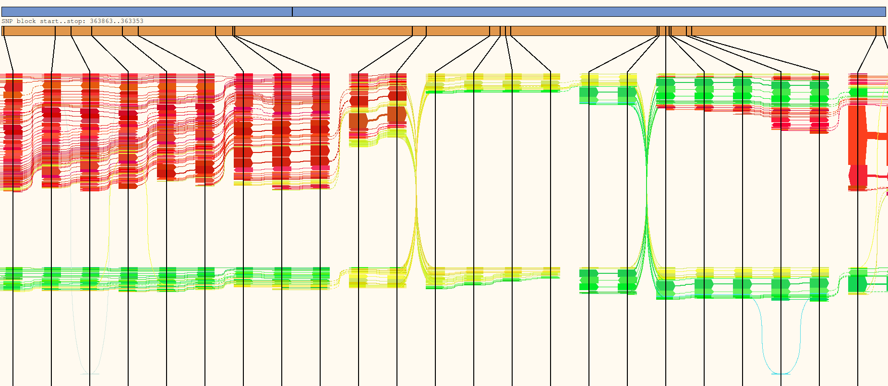
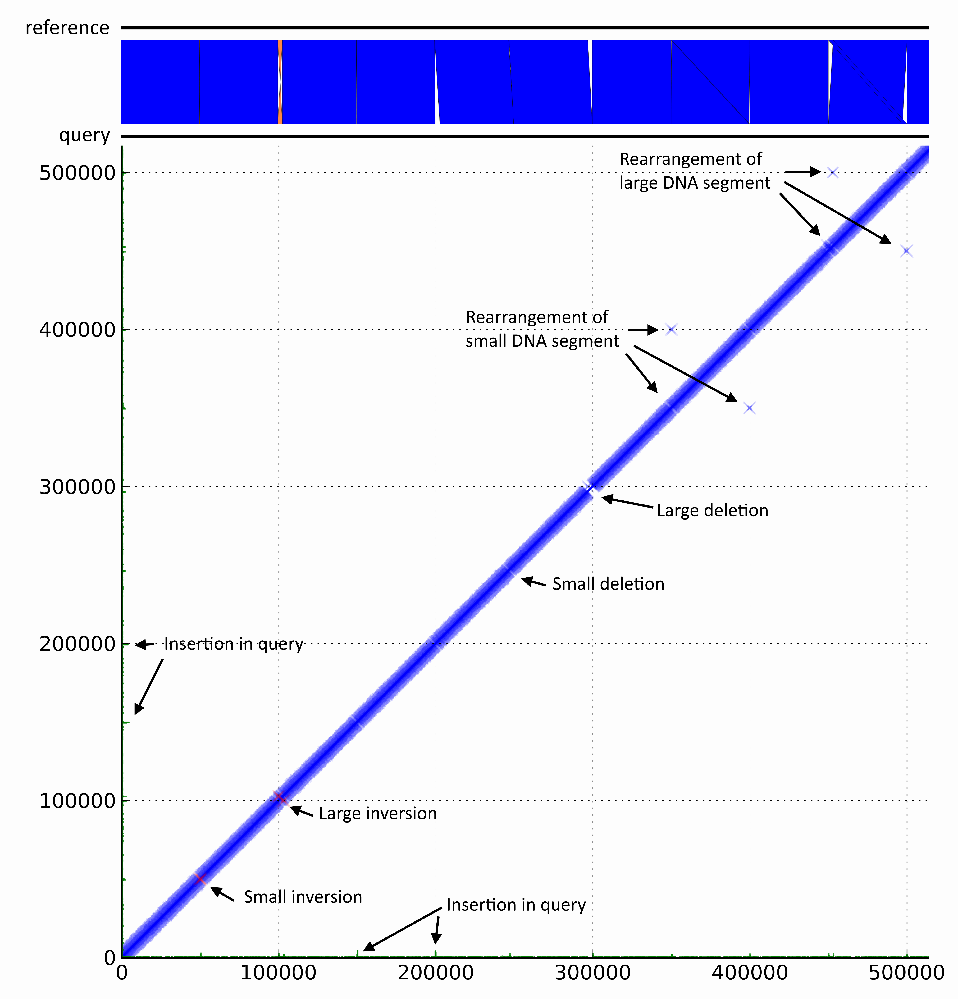

Easyfig
Easyfig is a Python application for creating linear comparison figures of multiple genomic loci with an easy-to-use graphical user interface (GUI).


Contiguity
Contiguity Contiguity is interactive software for the visualization and manipulation of de novo genome assemblies. Contiguity creates and displays information on contig adjacency which is contextualized by the simultaneous display of a comparison between assembled contigs and reference sequence. Contiguity can also be used to finish long read
assemblies.

HapFlow
HapFlow HapFlow is a python application for visualising haplotypes present in high-
throughput sequencing data. HapFlow identifies nucleotide variant profiles in raw read
sequences and creates an abstract visual representation of these profiles to make haplotypes
easier to identify

DiscoPlot
DiscoPlot DiscoPlot is a tool for visualising read alignments using a two-dimensional scatterplot. It allows the quick idenification of genomic rearrangements, misassemblies and sequencing artefacts by providing a scalable method for visualising large sections of the genome.
Other projects
- COIF
- Automatic plasmid detection in de novo assemblies.
- Befungal
- Artificial life based on the esoteric programming language Befunge.